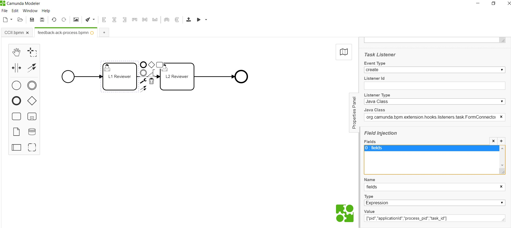
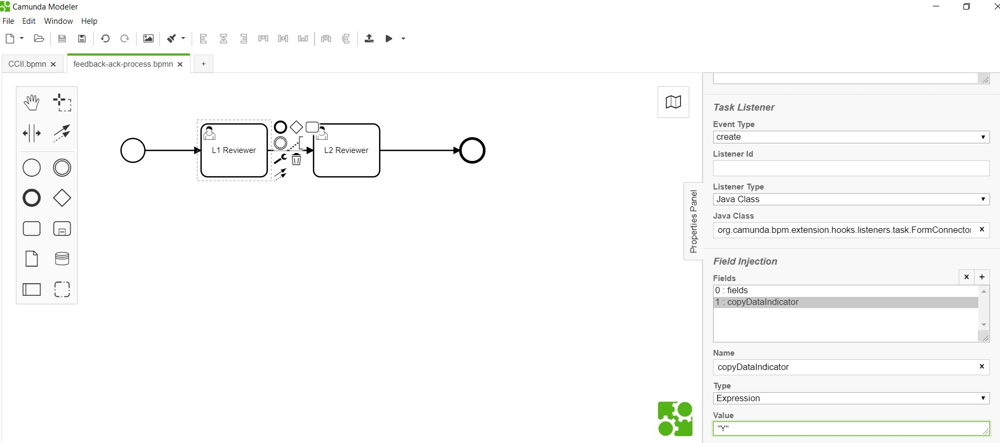

<article class="docs-article" id="section-1">
    <section class="docs-section" id="item-1-1">
        <div>
            <h2 id="form-connector-listener">Form Connector Listener</h2>
            <hr>
            <p><strong>org.camunda.bpm.extension.hooks.listeners.task.FormConnectorListener</strong>
            </p>
            <p>This component can be used on <strong>CREATE</strong> event of task listener. This
                serves to
                associate a form with task.
                Please note that, this is required only when there is a need to switch to a new form
                as part of the
                navigation from the initial submitted form.</p>

            <h3 id="type">Type</h3>
            <p>Task Listener</p>
            <h3 id="how-it-works">How it Works</h3>
            <p>This component relies on listed parameters.</p>
            <ul>
                <li>formName (Extension Property) : Should be the form name from formio.
                    <code>Mandatory = Yes</code>
                </li>
                <li>copyDataIndicator (Listener field of type expression). Possible Values: Y or N.
                    Setting this
                    value to &quot;Y&quot; will propagate all matching field values from existing
                    formUrl to new
                    form. </li>
                <li>fields (Listener field of type expression). Takes in cam variables as array. For
                    example.
                    [&quot;pid&quot;,&quot;applicationId&quot;,&quot;task_id&quot;]. It would
                    populate data from cam
                    variables to form. <code>Mandatory = Yes</code>
                    Note: pid is process instance id, task_id is task Id and applicationId is
                    applicationId. It is
                    important for forms associated with task to know about these.<br>

                </li>
            </ul>
            <h3 id="how-to-use">How to Use</h3>
            <p>Below snapshot shows how to configure the <strong>FormConnectorListener</strong> to a
                task. </p>
            <h5
                id="formconnectorlistener-being-configured-on-create-of-task-with-fields-configured-to-populate-task-details-into-form-metadata-fields-">
                FormConnectorListener being configured on create of task; with fields configured to
                populate task
                details into form&#39; metadata fields.</h5><br><br>
            <p>
            </p>
            <h5
                id="shows-the-configuration-of-optional-copydataindicator-been-configured-to-copying-data-from-existing-submission-to-new-one-">
                Shows the configuration of optional copyDataIndicator been configured to copying
                data from existing
                submission to new one.</h5><br><br>
            <p>
                <br><br>
                Click here <a href="Form Submission Listener">Form Submission Listener</a>
            </p>

        </div>
        </section>
        </article>